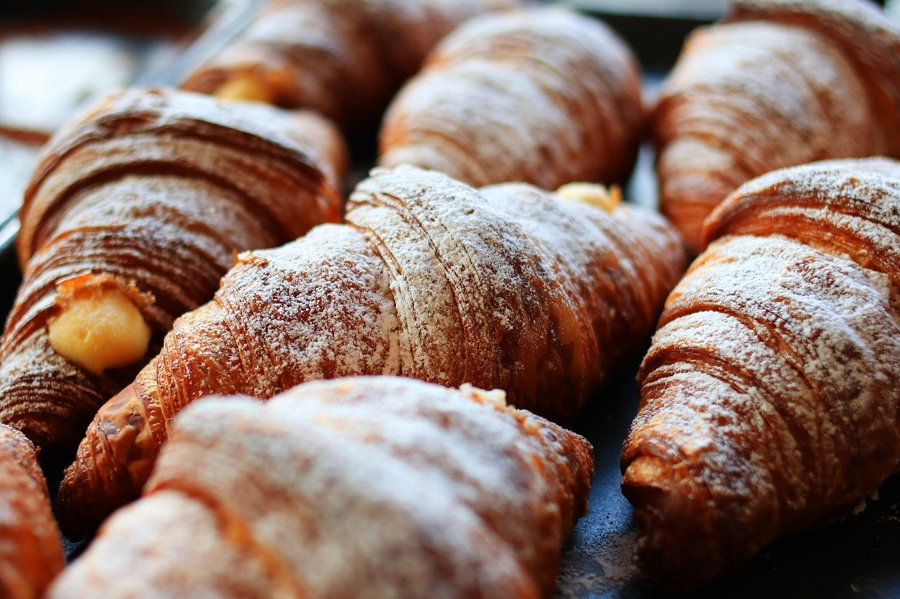
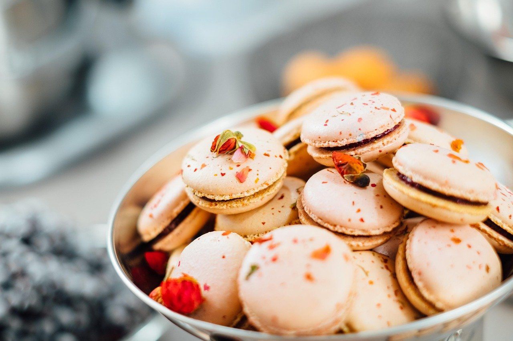
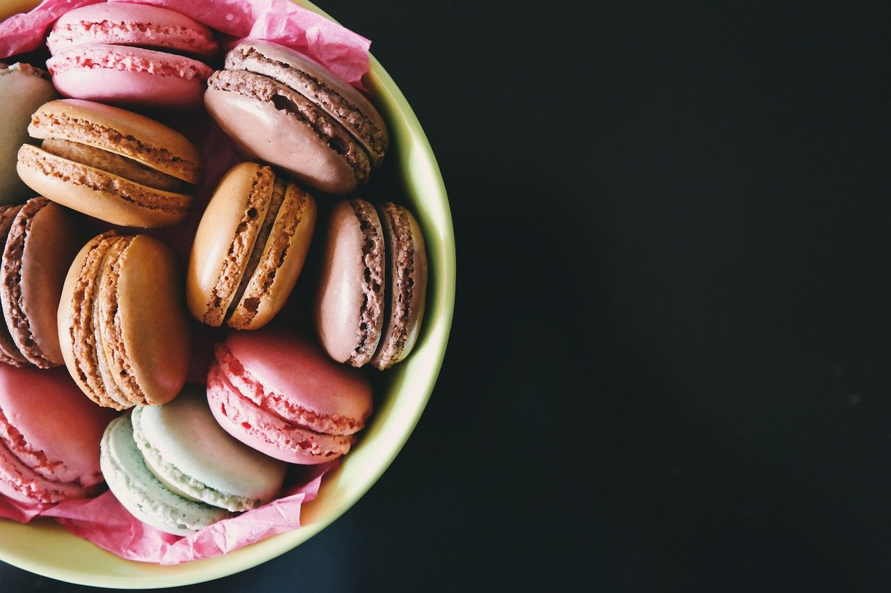

CocoricoBakery & Café
French bakery and café with catering on Division Street.
Cocorico
Bakery & Café
Nashville
We bake daily in our shop.
Cocorico Bakery & Café serves French food in Nashville at 1600 Division Street.
We bake daily in our shop and offer a welcoming place to sit down.
There is also a catering option available.
- French food
- 1600 Division Street, Nashville
- Catering

Bread, pastries and macarons.




Come by on Division Street.
Address
1600 Division StreetNashville
Hours
Monday, Wednesday–Friday 7am–2pm
Saturday–Sunday 8am–2:30pm